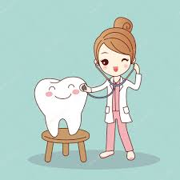

Descripción del Consultorio
En el consultorio de Franco Enríquez Ximena, nuestra prioridad es tu salud bucal. Somos un espacio dedicado a brindar tratamientos odontológicos de alta calidad con un enfoque humano y profesional. Contamos con tecnología de vanguardia y un equipo capacitado para que tu visita sea cómoda y efectiva.
Desde limpiezas preventivas y blanqueamientos hasta procedimientos especializados de endodoncia y ortodoncia, estamos listos para atender a toda tu familia en un ambiente seguro y diseñado para tu bienestar, utilizando colores que evocan frescura y salud.

Nuestro sistema de base de datos nos permite organizar la información de cada paciente de manera eficiente y segura, garantizando que cada registro sea tratado con la mayor confidencialidad y ética profesional.